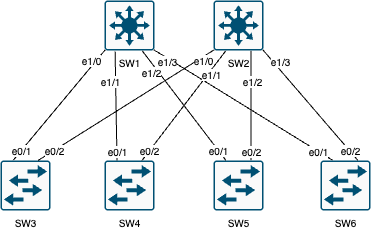

Comprehensive Ansible Lab¶

In the final exercise, we put together what we have learned to configure and manage a legacy fabric (based on STP).
Let's open the Cisco Legacy Core-Access topology lab, start all the devices and make sure they are reachable.

Modeling¶
Before even thinking about writing playbooks, we need to create a model of our environment, which means creating a data structure that can represent our fabric and serve as a working tool. There are many possibilities:
- NetBox / Nautobot: I have seen an integration between these applications, Ansible and the devices. A change to a device interface in NetBox / Nautobot triggers an Ansible playbook that modifies the configuration of the physical device.
- GitLab / GitHub: This approach leans more towards Infrastructure as Code. An operator changes the data structure, typically based on CSV / YAML / JSON, and the CI / CD pipeline runs various tests. If everything works, it adjusts the configuration of the devices in production.
- CSV / XLS / YAML: This is the simplest case: a plain file contains the parameters of the structure, and the manual execution of a playbook adjusts the configuration of the devices. Any tests are done manually by the operator.
For simplicity, let's choose the third approach. The first two would require significant development, beyond the scope of this course.
We choose a YAML file for its readability and flexibility. It should contain all the parameters that define our fabric. We definitely need to include information about:
- DNS.
- Hostname and domain.
- NTP.
- SNMP.
Operationally, we also need to:
- Harden the devices.
- Configure the interfaces.
We can imagine that the interfaces have a template based on their function. We definitely need templates for:
- Inter-switch-link (ISL) interfaces.
- Interfaces to endpoints.
Furthermore, the interfaces to endpoints have a profile based on the connected device, for example:
- Virtualization server.
- Firewall.
- Client access with VoIP phone.
- Management access.
- Office devices access.
We made this analysis based on our experience, but in a real case the analysis must be done on the environment we want to automate. We must understand how that environment is structured and how people work. Our goal is to formalize a structure (modeling) and standardize the way of working. Only then can we start developing the working tools, which in our case are based on Ansible.
Practically speaking, we can create a first draft of a data structure that defines our environment:
dns_domain: example.com
dns_lookup: false
dns_servers:
- 8.8.4.4
- 8.8.8.8
ntp_servers:
- 195.201.19.162
- 141.98.136.83
snmp_community: 494174af4b08f87467a138584f4edb33
We also need to define the VLANs that must be configured in the fabric:
vlans:
- id: 50
name: SERVER
- id: 51
name: DMZ
- id: 52
name: MGMT
- id: 53
name: OFFICE
- id: 54
name: VOIP
- id: 55
name: INTERNET
- id: 999
name: NATIVE
Finally, we need to define the profile associated with each interface:
interfaces:
Ethernet0/1:
profile: unused
Ethernet0/2:
description: to Hypervisor
profile: hypervisor
Ethernet0/3:
description: to Firewall
profile: firewall
Ethernet1/0:
description: to SW3
profile: isl
Ethernet1/1:
description: to SW4
profile: isl
Ethernet1/2:
description: to SW5
profile: isl
Ethernet1/3:
description: to SW6
profile: isl
The decision on how to formalize the interface-profile association is crucial, because it has a huge impact on the way of operating while having to protect the integrity of the infrastructure. The format in the example above looks cumbersome, but it guarantees that an interface cannot be associated with multiple profiles.
Let's see a second example:
profiles:
isl:
- switch: SW1
interface: Ethernet1/0
- switch: SW1
interface: Ethernet1/1
- switch: SW1
interface: Ethernet1/2
- switch: SW1
interface: Ethernet1/3
firewall:
- switch: SW1
interface: Ethernet0/3
unused:
- switch: SW1
interface: Ethernet0/1
- switch: SW1
interface: Ethernet0/2
If we had chosen the second format, apparently more convenient, the operator would have had to make sure that an interface is not associated with multiple profiles.
We therefore use the first format, where the interface is defined as a unique key within the file.
Define the Inventory¶
Next, let's define the inventory file, which for convenience we implement as an INI file:
[all]
sw1.example.com ansible_host=169.254.1.101
sw2.example.com ansible_host=169.254.1.102
sw3.example.com ansible_host=169.254.1.103
sw4.example.com ansible_host=169.254.1.104
sw5.example.com ansible_host=169.254.1.105
sw6.example.com ansible_host=169.254.1.106
[access]
sw[3:6].example.com
[core]
sw[1:2].example.com
[cisco_ios]
sw[1:6].example.com
[cisco_ios:vars]
ansible_connection=ansible.netcommon.network_cli
ansible_network_os=cisco.ios.ios
We place the variables associated with hosts and groups in the host_vars and group_vars directories, respectively. In particular:
host_vars/sw1.example.com.yml: contains the interface-profile association for SW1;host_vars/sw2.example.com.yml: contains the interface-profile association for SW2;host_vars/sw3.example.com.yml: contains the interface-profile association for SW3;host_vars/sw4.example.com.yml: contains the interface-profile association for SW4;host_vars/sw5.example.com.yml: contains the interface-profile association for SW5;host_vars/sw6.example.com.yml: contains the interface-profile association for SW6;group_vars/all.yml: contains all the fabric variables.
Credential Management¶
In planning our automation, we need to consider how credentials are managed. This choice is tied to the use of any orchestrators and directly impacts the security of our environment.
In general, two choices are possible:
- The playbook is invoked manually by an operator: in this case, the best choice is for the operator to enter the credentials interactively.
- The playbook is invoked by an orchestrator: in this case, the credentials will probably be passed as environment variables. The use of a vault is strongly recommended.
For simplicity, we choose the first option: the credentials are entered interactively during playbook execution.
Roles¶
Given the purpose we have set, we can easily identify five roles:
system, which handles the configuration of the hostname, domain and DNS servers;ntp, which handles the configuration of the NTP servers;snmpv2, which handles the configuration of the SNMPv2 community;interface_profile, which handles the configuration of the interfaces, applying the correct profile;vlan, which handles the creation of the necessary VLANs.
Let's create the skeleton for the five roles:
ansible-galaxy role init roles/cisco_ios_ntp
ansible-galaxy role init roles/cisco_ios_interface_profile
ansible-galaxy role init roles/cisco_ios_snmpv2
ansible-galaxy role init roles/cisco_ios_system
ansible-galaxy role init roles/cisco_ios_vlan
Role cisco_ios_system¶
The cisco_ios_system role requires only the roles/cisco_ios_system/tasks/main.yml file, which contains the tasks that configure the hostname, domain, DNS lookup and DNS servers.
We split the task into two parts, because it is more convenient for compliance to know which configuration needs to be changed. In the first part, we configure the hostname and domain. In particular, as a standard, we want the hostname in uppercase and the domain in lowercase:
# Set and normalize hostname and domain
- name: SETTING FACTS
ansible.builtin.set_fact:
device_hostname: "{{ inventory_hostname_short | upper }}"
device_domain: "{{ inventory_hostname.split('.', 1)[1] | lower }}"
# Configure hostname
- name: CONFIGURING HOSTNAME AND DOMAIN NAME
cisco.ios.ios_system:
hostname: "{{ device_hostname }}"
domain_name: "{{ device_domain }}"
In the second part, we configure the DNS servers:
# Configure DNS lookup
- name: CONFIGURING DNS LOOKUP
cisco.ios.ios_system:
lookup_enabled: "{{ dns_lookup }}"
name_servers: "{{ dns_servers }}"
Role cisco_ios_ntp¶
The cisco_ios_ntp role requires only the roles/cisco_ios_ntp/tasks/main.yml file, which contains the tasks that configure the NTP peers.
Before configuring the NTP peers, we need to transform the list of IP addresses into the data structure required by the module:
# Convert a list of IP into a list of peers
- name: SETTING NTP PEER LIST
ansible.builtin.set_fact:
ntp_peers_config_list: >-
[
{% for peer in ntp_servers %}
{"peer": "{{ peer }}"},
{% endfor %}
]
Now we can apply the configuration:
# Configure NTP peers
- name: CONFIGURING NTP PEERS
cisco.ios.ios_ntp_global:
config:
logging: true
peers: "{{ ntp_peers_config_list }}"
state: replaced
Role cisco_ios_snmpv2¶
The cisco_ios_snmpv2 role requires only the roles/cisco_ios_snmpv2/tasks/main.yml file, which contains the task that configures a single SNMPv2 read-only community.
# Configure the SNMPv2 read-only community
- name: CONFIGURING SNMPv2 COMMUNITY
cisco.ios.ios_snmp_server:
config:
communities:
- name: "{{ snmp_community }}"
ro: true
state: replaced
Role cisco_ios_vlan¶
The cisco_ios_vlan role requires only the roles/cisco_ios_vlan/tasks/main.yml file, which contains the tasks that configure the VLANs.
Before configuring the VLANs, we need to transform the list defined in the design phase into the data structure required by the module:
# Convert a list of VLAN to be used with ios_vlans module
- name: SETTING VLAN LIST
ansible.builtin.set_fact:
vlans_config_list: >-
[
{% for vlan in vlans %}
{
"vlan_id": "{{ vlan.id }}",
"name": "{{ vlan.name }}",
"mtu": 1500,
"state": "active",
"shutdown": "disabled",
},
{% endfor %}
]
Now we can apply the configuration:
# Configuring VLANs
- name: ADDING VLANS
cisco.ios.ios_vlans:
config: "{{ vlans_config_list }}"
state: replaced
Profiles¶
In the initial phase, we identified seven types of interfaces:
isl: used for interfaces connecting to other switches (inter-switch-link);hypervisor: used for hypervisor interfaces, configured as trunks with all VLANs passing;firewall: used for firewall interfaces, configured as trunks with all VLANs passing;client: used for user computer interfaces, configured in access mode with the VoIP VLAN passing;management: used for device management interfaces, configured in access mode;office: used for office devices such as printers and fax machines, configured in access mode;unused: used for unused interfaces.
We have two options for developing the profiles:
- We can parameterize the profiles, creating a single set of tasks that configures the interfaces;
- We can create multiple sets of tasks, one per profile.
The first choice would be more correct from a software design perspective, but the second is simpler, more readable and more maintainable for the network automation we are creating. Once again, there is no correct choice, but a balance between different possibilities that determines the best choice in the specific context.
For each device, the cisco_ios_interface_profile role reads the interface definitions and applies the correct profile. It requires the roles/cisco_ios_interface_profile/tasks/main.yml file and a file for each profile, placed in the same directory.
To optimize performance, the main file reads the configuration once, and it is then used while configuring the individual interfaces. Then the task file for the associated profile is invoked:
# Get running-config
- name: GETTING RUNNING CONFIGURATION
cisco.ios.ios_command:
commands:
- show running-config
register: show_running_config
# Attach profile to interface
- name: ATTACHING PROFILE TO INTERFACE
ansible.builtin.include_tasks: "profile_{{ interface.value.profile }}.yml"
with_dict: "{{ interfaces }}"
loop_control:
loop_var: interface
The main file also handles the interface state and description. First, however, we need to create a data structure usable with the ios_interfaces module:
# Generate interface status/description data to be used with ios_interface
- name: SETTING INTERFACE LIST
ansible.builtin.set_fact:
interface_config_list: >-
[
{% for interface, interface_data in interfaces.items() %}
{
"name": "{{ interface }}",
{% if interface_data.profile == 'unused' %}
"enabled": false,
{% else %}
"description": "{{ interface_data.description }} ({{ interface_data.profile }})",
"enabled": true,
{% endif %}
},
{% endfor %}
]
# Set description and activate interface if used
- name: "SETTING INTERFACE STATUS"
cisco.ios.ios_interfaces:
config: "{{ interface_config_list }}"
Finally, let's implement the files that define the profiles. The ios_interfaces module allows various configurations, but it does not give us enough freedom of action. We therefore use the ios_config module to configure the interfaces as we want.
# Configure profile isl
- name: "APPLYING PROFILE ISL TO INTERFACE {{ interface.key }}"
cisco.ios.ios_config:
config: "{{ show_running_config.stdout.0 }}"
lines:
- switchport trunk encapsulation dot1q
- switchport mode trunk
- switchport nonegotiate
- udld port aggressive
parents: "interface {{ interface.key }}"
before: "default interface {{ interface.key }}"
The code above shows the configuration of the isl profile in detail. In particular, if the module detects any difference, it first deletes the interface configuration (default interface) and then configures it again. This is why we decided to separate the description.
Playbook¶
All that is left is to put together what we have created, writing the playbook that calls the roles in order and saves the configuration:
#!/usr/bin/env ansible-playbook
- name: CONFIGURE FABRIC
hosts: core,access
gather_facts: false
roles:
- role: cisco_ios_system
tags: dns,hostname
- role: cisco_ios_ntp
tags: ntp
- role: cisco_ios_snmpv2
tags: snmp
- role: cisco_ios_vlan
tags: vlan
- role: cisco_ios_interface_profile
tags: interface
post_tasks:
- name: SAVING CONFIG
tags: always
cisco.ios.ios_config:
save_when: modified
We are aware that we have omitted some important configurations, such as those related to spanning tree and logging.
Ansible Configuration¶
Before running the playbook, let's configure Ansible through the ansible.cfg file and optimize performance by adjusting the forks and strategy parameters:
[defaults]
inventory = inventory.ini
stdout_callback = ansible.builtin.default
strategy = free
forks = 8
[persistent_connection]
ssh_type = libssh
[libssh_connection]
host_key_checking = false
look_for_keys = false
Testing¶
Now let's move on to the testing phase. For each role, we need to verify:
- That the configuration performed by the role is as expected;
- That a new execution confirms the state of the devices without further changes (idempotence);
- That a change in the configuration is correctly reflected on the devices.
We execute the playbook and wait for it to finish without errors:
Now we need to check on the devices that the configuration is as expected.
Then we run the playbook again to verify that there are no further changes.
Now we need to change the configuration, for example:
- By replacing a DNS server;
- By replacing an NTP peer;
- By changing the SNMP community;
- By changing the profiles of two interfaces.
We run the playbook again and, when it completes, we verify the configuration on the devices.
We run the playbook one last time and verify that there are no further changes.
All the sources are available on GitHub.